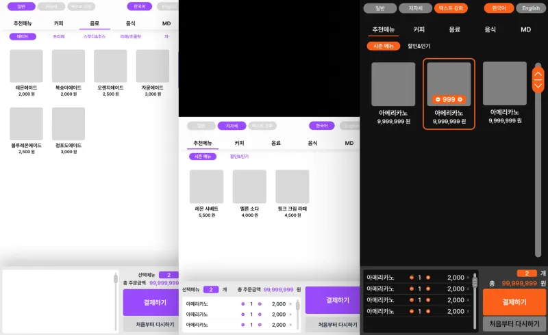
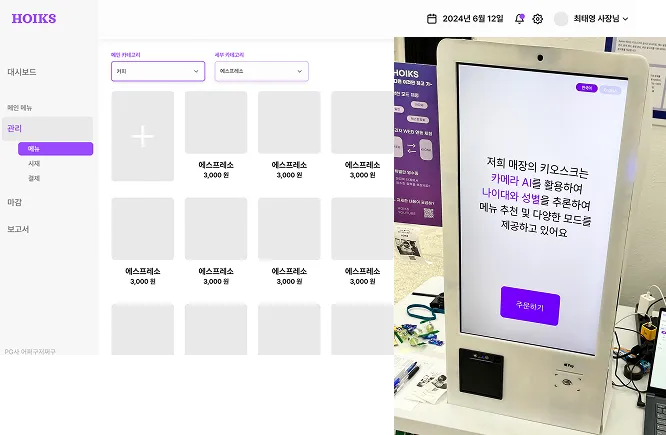
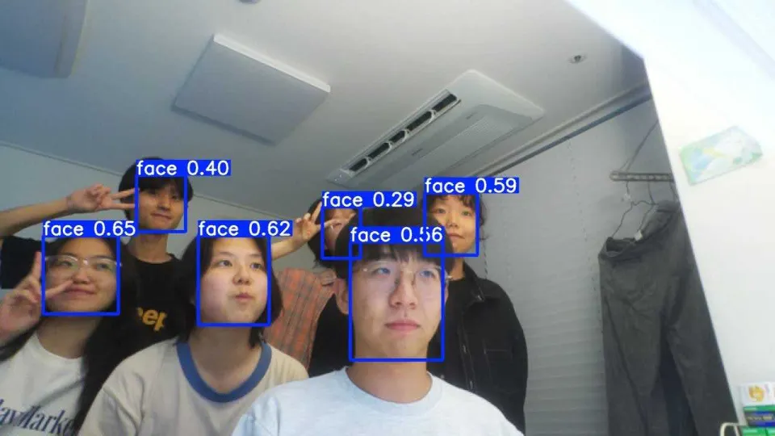
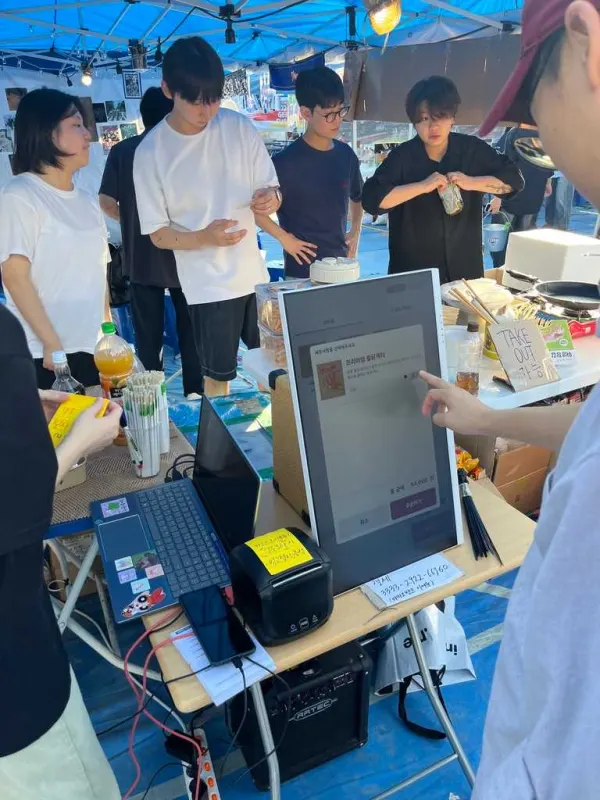
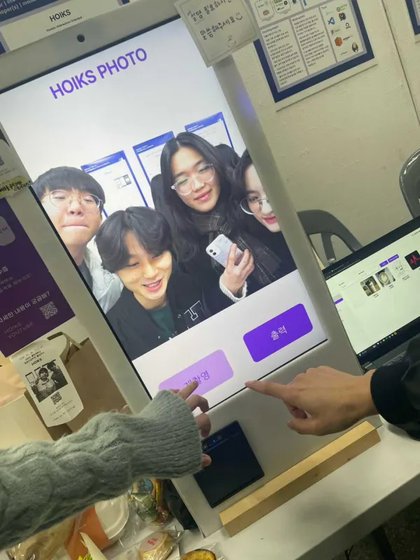

협업 프로젝트
HOIKS
프리뷰
개요
- 프로젝트 기간
- 2024.01 – 2024.12
- 개발 인원
- 4명
- 프로젝트 목적
- 키오스크에 장착된 카메라를 통해 사용 고객을 AI로 분석하고, 분석한 결과에 따라 지능적으로 고객 맞춤 키오스크 사용 경험과 비즈니스 서비스를 제공
- 프로젝트 내용
-
- AI 기반 키오스크 사용자 안면 분석 (나이 및 성별)
- 분석 결과 기반 키오스크 UI 자동 전환
- 사용자들의 나이 및 성별 통계 제공
- 관리자용 키오스크 운영 및 정산 서비스 제공
- 키오스크 메뉴 및 카테고리 관리
- 실시간 키오스크 운영 현황
- 원격 키오스크 관리 및 정산
- AI 기반 키오스크 사용자 안면 분석 (나이 및 성별)
- 상세 역할
-
- 객체탐지 & 안면인식 AI 모델 개발 & 서빙
- 임베디드 환경용 온디바이스 AI 모델 경량화 & 최적화
- 열전사 프린터 제어 UART 애플리케이션 구현
- 성과
- 졸업프로젝트 전시회 장려상
- 2024 컴퓨터공학과 졸업프로젝트 전시회 장려상 수상
기술 스택
- PyTorch 안면 분석 모델 학습
- NCNN YOLO 온디바이스 추론
- ONNX Runtime 성별 · 연령 모델 추론
- FastAPI AI 추론 · 프린터 API
- ReactJS 키오스크 · 관리자 웹
- NestJS SaaS 백엔드
- Redis 백엔드 캐시
- Prisma ORM
- MySQL 데이터베이스
- RPi5 키오스크 디바이스
주요 기능
-
AI 비전 기반 사용자 분석 & 맞춤형 UI
- 키오스크 카메라로 사용자 성별 · 연령 분석
- 분석 결과에 따른 UI 자동 전환
핵심 구현 과제
- 객체탐지 & 안면분석 AI 모델 개발
- 임베디드 온디바이스 최적화 & 경량화

-
SaaS 서비스를 포함한 실제 키오스크 디바이스
- 주문 및 영수증 출력
- 관리자용 운영 · 정산 SaaS
핵심 구현 과제
- 열전사 프린터 제어 (UART)
- 키오스크 내부 네트워크 구성

구현 과정
얼굴 탐지 및 안면 분석 비전 AI 개발
YOLOv8 얼굴 탐지 + VGG-16 성별 · 연령 추론, FastAPI 서빙
키오스크에 탑재된 카메라로 사용 고객의 얼굴 영역을 탐지 · 추출하고, 이를 바탕으로 성별과 연령을 추론하는 AI 모델을 개발했습니다.

- 얼굴 탐지 — YOLOv8: 사전학습된
yolov8n-face모델로 얼굴 영역만 추출해 안면 분석 모델에 전달 - 안면 분석 — VGG-16: 성별 모델과 연령 모델을 병렬 추론, 사전학습 모델을 한국인 안면 데이터로 파인튜닝
- FastAPI 엔드포인트 제공 — 키오스크 내부에서 추론 결과에 접근, 요청 시에만 추론하도록 서버 구성
임베디드 환경 온디바이스 AI 모델 최적화
NCNN · ONNX Runtime 전환으로 추론 1.5초 → 0.3초
키오스크 디바이스로 쓰는 Raspberry Pi 5의 SoC 성능 제약을 고려해, CPU 추론 프레임워크로 빠른 응답의 추론 결과를 제공하도록 최적화했습니다.
문제
- 네이티브 모델 온디바이스 추론 시 YOLO 500ms 이상, 연령 · 성별 모델 1000ms 이상 — 총 1.5초 이상의 긴 응답
- 클라우드 추론 서비스 사용과 모델 최적화 사이의 선택
해결
- YOLO 모델을 NCNN으로 변환 → 200ms 이내 추론
- 연령 · 성별 모델을 ONNX Runtime으로 변환 → 100ms 이내 추론
결과
총 추론 시간 0.3초 이내로 기존 대비 약 80% 단축 (500ms 간격 반복 요청 자체 벤치마크 기준).
열전사 프린터 제어 UART 애플리케이션
ESC/POS 규격 UART 애플리케이션, 실제 행사 현장 운용
키오스크에 꼭 필요한 영수증 프린터(열전사 프린터)를 제어하는 UART 통신 애플리케이션을 구현했습니다. 이를 실제 환경(대동제 축제, 졸업전시회)에서 주문 영수증 출력과 이벤트용 포토 프린터로 운용하며 사용자 경험을 얻었습니다.
- ESC/POS 규격 애플리케이션 — Python 시리얼 통신 라이브러리로 이미지 · QR · 텍스트 출력 API 구현
- Raspberry Pi 5 디바이스 세팅 — RPi 4와 달리 별도 시리얼 디바이스 설정이 필요해 디바이스 트리 · 부팅 스크립트 구성
- FastAPI 엔드포인트에 통합 — 내부 키오스크 클라이언트의 HTTP 출력 요청 → ESC/POS 애플리케이션 → UART
현장 운용
대동제 동아리 주점의 주문 키오스크와 졸업프로젝트 전시회의 이벤트용 포토 프린터로 활용했습니다.

